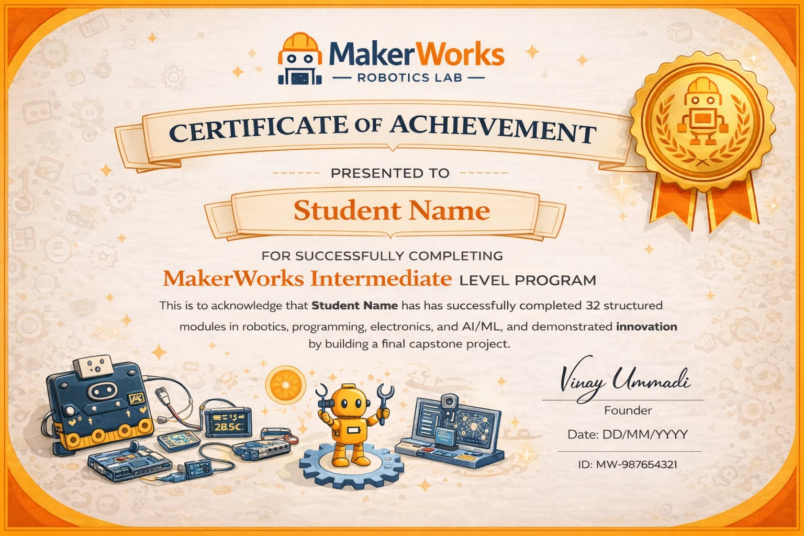
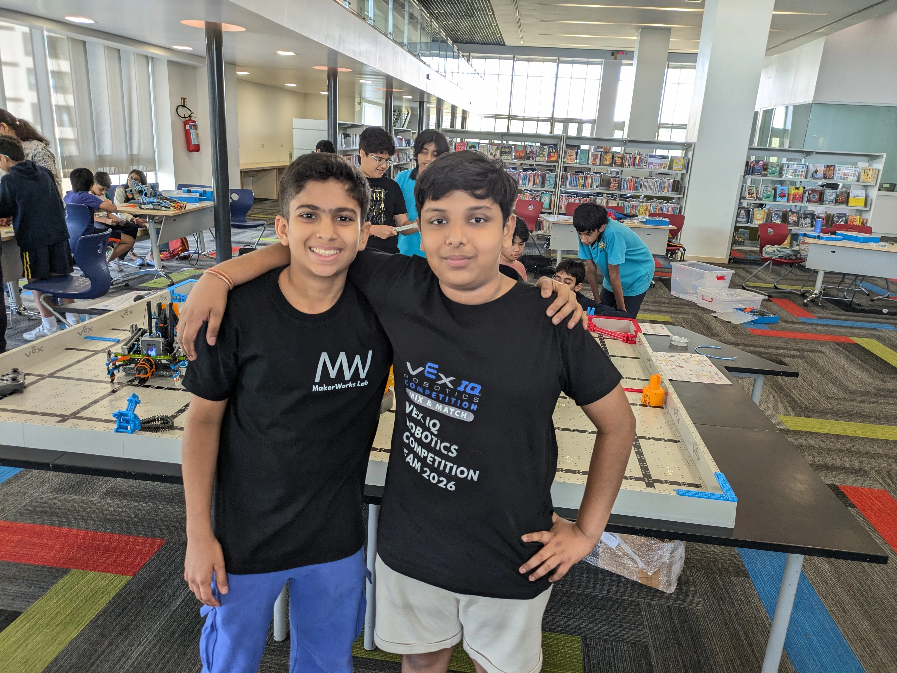
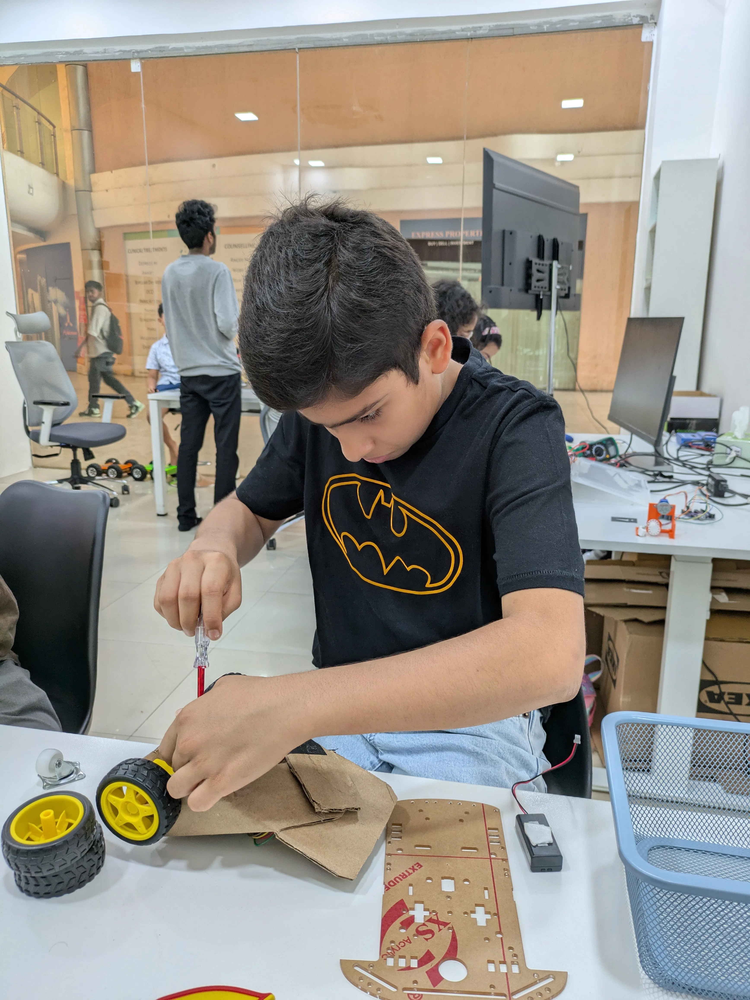
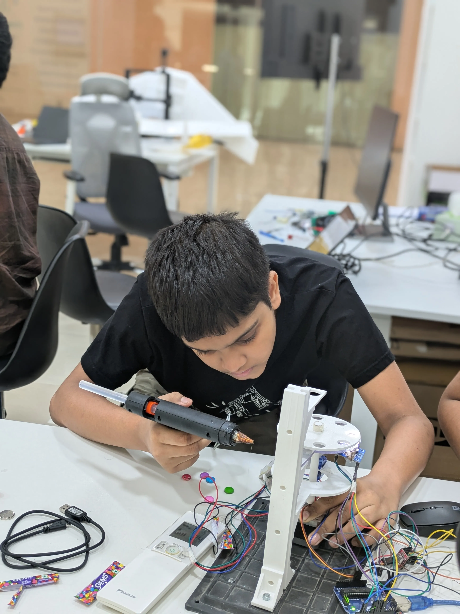
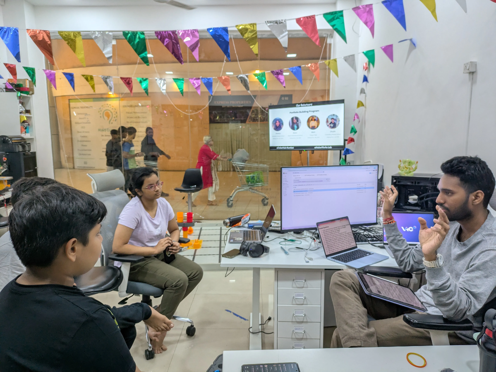
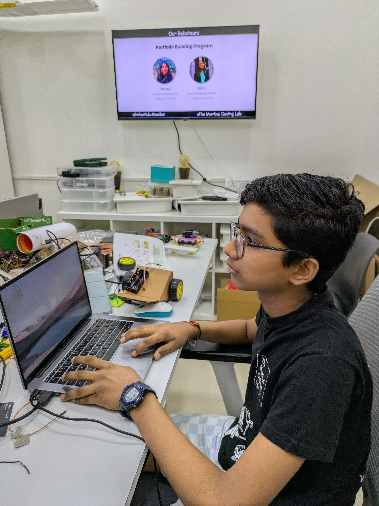

A foundational 2-year technical program for ages 11–14 focusing on Arduino fundamentals, electronics basics, and 3D design using TinkerCAD.
Enroll Now11 – 14 Years
2 Years Course
2 Sessions/Week
Learning the shift from block-based logic to text-based Arduino programming.
Middle schoolers ready for logical complexity and math application.
For kids who ask "how does this work?" and love dismantling things.
Basic computer knowledge is sufficient; we build the tech base together.
Introduction to the Arduino ecosystem, covering basic IDE setup, digital/analog I/O, and logical flow.
Understand the core pillars of electricity: Voltage, Current, and Resistance through hands-on breadboarding.
Learn the essentials of 3D modeling using TinkerCAD, from primitive shapes to printable objects.
Moving from block logic to foundational text-based Arduino programming.
Understanding the basics of electricity, components, and practical breadboarding.
Mastering the fundamentals of 3D modeling and preparation for 3D printing.
Applying skills to build independent projects and earn level-1 certification.
Upon successful completion of the 30-module curriculum and the technical capstone project, students are awarded the official MakerWorks Junior Intermediate Certificate.
Mastery over Arduino basics, Electronics, and TinkerCAD Design.
Building functional electronic projects using breadboards and code.
Prepares students for future advanced robotics and engineering tracks.






Find answers to common queries about our Intermediate Level Program and how we bridge the gap to real-world engineering.
We're here to help you choose the best technical path for your child.
Chat with an Expert